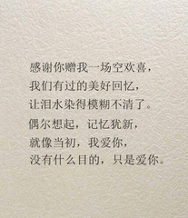
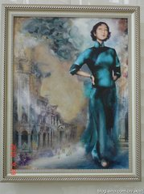
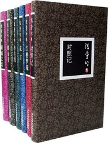
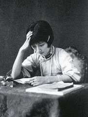
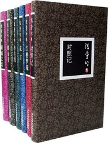
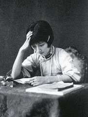
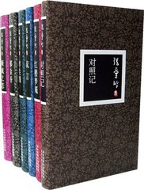
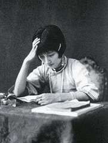
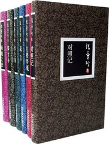
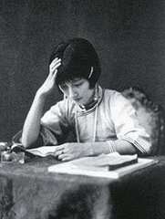

 





张爱玲
——民国世界的临水照花人


张爱玲当然是不世出的天才，她的文字风格很有趣，像是绕过了五四时期的文学，直接从《红楼梦》、《金瓶梅》那一脉下来的,张爱玲的小说语言更纯粹，是正宗的中文，她的中国传统文化造诣其实很深。
-- 白先勇（当代著名作家）
张爱玲经典著作：
张爱玲经典爱情语录：
也许每一个男子全都有过这样的两个女人，至少两个． 娶了红玫瑰，久而久之，红的变了墙上的一抹蚊子血，白的还是“床前明月光”； 娶了白玫瑰，白的便是衣服上的一粒饭粘子，红的却是心口上的一颗朱砂痣。